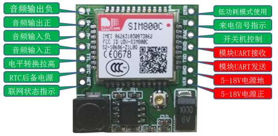

SIM800C是一款为GPRS数据流量设计的模块，使用AT指令进行操作。只要插上一张SIM卡，就可以用来上网。当然，它也可以用来通话和发送短信。由于项目需要使用实时在线的数据通道，但数据量不太大，能力上GPRS模块可以胜任，而价格又很低廉，所以使用GPRS非常合适。
SIM800C的外观是这样的：

一般的使用场景下，只需要用到VCC、GND、RX和TX。
本文只讲解使用SIM800C的GPRS功能实现TCP通信的方法与步骤。
===================阶段一：常用AT指令=================
使用USBTTL连接SIM800C即可使用串口调试软件与SIM800C交互。SIM800C默认波特率是115200。如果需要修改波特率，可以使用命令：
AT+IPR=9600;&W
来进行修改。后面的;&W的意思是保存这一条设置，这样重启之后依旧可以用这个波特率。
SIM800C上电之后会自动进行初始化。因为它是专门为GPRS设计的，所以会自动开启GPRS，用专业术语说就是“GPRS附着”。当然，也可以手动进行“GPRS附着和“GPRS分离“。GPRS附着的命令是：
AT+CGATT=1
GPRS分离的命令是
AT+CGATT=0
也可以查询当前GPRS附着状态：
AT+CGATT?
一旦GPRS附着完成，接下来就可以建立TCP连接了。比如我要连接到103.44.145.245的18137端口，那么就使用命令：
AT+CIPSTART=TCP,103.44.145.245,18137
如果命令输出”CONNECT OK”字样，说明连接成功。不过我经过实验发现，SIM800C模块不管连接是否成功，都会输出”CONNECT OK”字样。如果事实上连接不成功，那么稍过片刻就会输出”CLOSED”字样。
连接成功之后，就可以发送数据了。发送数据使用命令
AT+CIPSEND
输入之后，模块会输出一个”>”字符，提示输入发送内容。比如我输入”hello”。然后附加一个字节0x1A表示数据到结尾了。当模块收到0x1A之后，就会自动发送数据。如果发送成功（即收到了服务器的确认），就会输出“SEND OK”字样，否则输出“SEND FAIL”字样。
这个命令的另外一个用法是这样的：
AT+CIPSEND=<length>
<length>表示接下来要发送的数据长度。然后模块会输出“>”字符，提示输入内容。当输入字符数量刚好到length时，模块就会自动发送数据。
关闭连接的命令是
AT+CIPCLOSE
执行成功输出”CLOSE OK”。
AT+CIPSTART、AT+CIPSEND、AT+CIPCLOSE这三个命令就已经可以完成最基本的TCP连接、发送和关闭了。那么怎么接收数据呢？
接收数据有三种方式：
（1）默认情况下，收到的内容直接通过串口输出；这种方式不太友好，对解析数据也比较困难。
（2）当执行了
AT+CIPHEAD=1
之后，当模块收到数据后，将会输出形如下的内容：
+IPD,<length>:<content>
由于有了一个固定的头部，那么解析数据就容易多了。
（3）当执行了
AT+CIPSRIP=1
之后，当模块收到数据后，就会输出形如下的内容：
RECV FROM:<IP>:<ADDRESS>:<PORT>
除此之外，还可以查询当前连接状态，使用命令：
AT+CIPSTATUS
返回如下之一的结果：
| 输出 | 含义 |
|---|---|
| IP INTIAL | GPRS 初始化 |
| IP START | 开始 TCP/UDP 会话 |
| IP CONFIG | 配置 PDP 上下文 |
| IP GPRSACT | 上下文已经激活 |
| IP STATUS | 得到本地IP地址 |
| TCP/UDP CONNECTING | 正在连接服务器 |
| SERVER LISTENING | 正在监听服务器端口 |
| IP PROCESSING | 正在处理存在的链接 |
| CONNECT OK | 成功连接上服务器 |
| TCP/UDP CLOSING | 正在关闭链接 |
| TCP/UDP CLOSED | 链接已经关闭 (本地IP/PDP 上下文仍在) |
| PDP DEACT | PDP 上下文去激活 |
更多命令可以查看官方文档《SIM800系列_TCPIP_应用文档_V1.01.pdf》。
==================阶段二：方案选择==================
本来打算使用AT指令来发送和接收数据的，后来在实践中发现诸多问题。一个问题就是，串口的交互非常缓慢，为了发一段数据，需到先发送多条AT指令，还要等待AT指令的回复，最终才能发送数据。而灌入了数据之后呢，还需要等待“SENK OK”字样，才能进行下一段数据的发送。
就在绝望之时，我忽然看到了文档上说这个模块还有一种传输方式——透传！所谓透传，就是“透明传输”的意思。首先通过AT指令告诉模块：“待会儿一旦建立了连接，就自动进入透传模式”。接着，连接TCP或者UDP，成功以后，模块就自动进入了透传模式。此时，通过串口发给模块的任何数据都会通过网络发送出去，而从网络接收到的任何数据，就会被模块用串口打印出来。
得知“透传”模式，我仿佛抓住了救命稻草。只要在模块初始化的时候设置好透传模式，然后开启TCP连接，接下来就可以把串口当作Socket来使用了！
不过呢，这里还有一个问题需要考虑：如果当前正在透传，用户关闭了Java进程，过了一会儿又开启了Java进程，此时，Java试图向SIM800C发送AT指令，但是由于SIM800C在透传中，所以发送的AT指令都会被当作数据发送到网络上去。
怎么办？要么在Java程序结束时让模块退出透传，要么在每次初始化之前让模块退出透传。前者是做不到的，因为如果用户强行杀死进程，进程是毫无感知的，根本没有机会让模块退出透传。模块处于透传模式时，发送连续的‘+++’可以让模块退出。而我又发现，如果模块当前处于命令模式，发送’+++’模块除了回显以外没有别的回应。于是方案就出来了——在每次初始化之前，发送‘+++’，然后等待足够长的时间（比如5秒），那么此时模块肯定不在透传模式了！
另一个问题是：如果之前创建过连接，那么当要设置透传时会出错。解决办法是用AT+CIPSHUT代替AT+CIPCLOSE。
总结一下代码的过程：
（1）发送“+++“，等待5秒，清空接收缓冲区；
（2）发送“AT+CGATT?“，查询当前GPRS是否已附着；如果未附着，则使用“AT+CGATT=1”让GPRS附着；
（3）发送“AT+CIPSHUT”关闭所有之前的连接；
（4）发送“AT+CIPMODE?”查询是否设置了自动进入透传模式；如果否，则使用“AT+CIPMODE=1”让模块自动进入透传模式；
（5）发送“AT+CIPSTART=TCP,<IP>,<PORT>”建立TCP连接，一旦成功，自动进入透传模式；
（6）透明地收发数据。
==================阶段三：代码概览==============
首先最底层肯定是读写串口的功能。好在树莓派（也可能是其他的派，比如Orange Pi）上用Java开发串口程序有现成的类库——Pi4j，这是著名的函数库wiringPi的Java封装。有了Pi4j，就可以在Pi上用Java轻松控制GPIO、I2C、SPI和串口。我用C++调用Linux API体验过串口编程（详见《Linux 串口操作（C++实现同步发、异步收的串口类）》），里面就提到，串口的接收缓冲区很小，如果不及时把数据取走，就会丢失，所以办法就是创建一个独立的线程不停读取数据。幸运的是，Pi4j已经为我们封装好了一个Serial类，其内部创建了一个不断读取数据的后台线程，我们不必再考虑底层细节。而且，Serial提供了getInputStream()和getOutputStream()方法，这样我们就可以把串口当作一个Socket一样进行读写了。
接下来需要有一个AT交互的函数。由于模块中涉及到大量的AT命令，这些命令的交互过程都大同小异，应该封装成一个函数来减少重复耦合，这个函数是这样的：
/**
* 进行一次AT指令交互
* @param atCmd 发送的AT指令
* @param timeouts 读取每一行回应的超时时间
* @param regexs 每一行回应必须满足的正则表达式
* @return 每一行回应
* @throws IOException 串口通信错误
* @throws DeviceException Sim800C工作异常
*/
private String[] atCommand(String atCmd,int[] timeouts,String[] regexs) throws IOException,DeviceException
{
//发送AT命令和换行符
writer.println(atCmd);
writer.flush();
//盛放响应的数组
String[] replys=new String[timeouts.length];
for(int i=0;i<replys.length;i++)
{
//在超时时间内读取一行
String line=reader.readLine(timeouts[i],true);
//如果开启调试，则显示读取到的内容
if(DEBUG_AT)
System.out.println("[DEBUG] "+line+"");
//返回null说明超时
if(line==null)
{
String message=String.format("'%s'[%d] no response",atCmd,i);
throw new DeviceException(message);
}
//如果不满足正则表达式，说明设备异常
if(!line.matches(regexs[i]))
{
String message=String.format("'%s'[%d] is '%s',want '%s'",atCmd,i,line,regexs[i]);
throw new DeviceException(message);
}
replys[i]=line;
}
return replys;
}
每一个AT命令的响应，都是由一行行组成的。每一行可能打印出来所需要的时间是不同的，因此各行的超时时间要能够指定；而每一行应该都有固定的格式，因此使用正则表达式来指定。
其中的reader的类型是TimeoutableReader，它实现了一个带有超时时间的行读取函数readLine()，具体参考《TimeoutableReader 带有超时功能的行读取器（Java）》。
有了这个函数以后，进行一次AT指令交互，只需要指定每行的超时时间、每行应该满足的正则表达式即可。比如我要查询当前是否已经GPRS附着，可以这样：
/**
* 判断当前是否GPRS附着
* @return true表示GPRS已附着，false表示GPRS未附着
* @throws IOException 串口通信错误
* @throws DeviceException Sim800C工作异常
*/
private boolean isGPRSAttached() throws IOException,DeviceException
{
//发送AT+CGATT?
String atCmd="AT+CGATT?";
//期待三行响应，每行的超时时间
int[] timeouts=new int[]{5000,5000,5000};
//期待三行响应，每行应满足的正则表达式
String[] regexs=new String[]{"AT\\+CGATT\\?","\\+CGATT: \\d","OK"};
//进行AT交互，并获取三行响应的具体内容
String[] replys=atCommand(atCmd,timeouts,regexs);
//看第二行
String statusLine=replys[1];
//如果第二行最后一个字符是1，说明已附着GPRS，否则没有附着
char status=statusLine.charAt(statusLine.length()-1);
return status=='1';
}
从而隐藏了底层的细节。
另外一个需要考虑的问题是对“CLOSED”标识的处理。当成功连接、进入透传模式之后，如果网络意外断开，那么SIM800C会通过串口输出”\r\nCLOSED\r\n”，我称之为“断开标识”。如果遇到“断开标识”，那么就不能再读取，而且断开标识本身不能被当作数据。方法就是每收到一个字节，就加入流中，然后查看流是否以断开标识结尾。如果是，那么要标记当前连接已断开，同时把断开标识从流的末尾移除。
====================阶段四：代码=====================
再多的自然语言也没有代码来的直观、简洁、准确。我直接贴上代码，大部分代码都已经附上了注释，很容易理解：
IOChannel.java
package zjs.wirelessSample.module;
import java.io.IOException;
/**
* 所有能够收发字节的模块的统一接口
*/
public interface IOChannel
{
/**
* 判断是否连接
* @return true则连接，false则未连接
*/
public boolean isConnected();
/**
* 发送数据
* @param data 数据缓冲区
* @param offset 待写出的数据在缓冲区的哪里开始
* @param length 输出多少字节的数据
* @throws IOException IO错误
*/
public void write(byte[] data,int offset,int length) throws IOException;
/**
* 获取接收到的数据的长度
* @return 可读数据长度
* @throws IOException IO错误
*/
public int available() throws IOException;
/**
* 读取数据
* @param data 数据缓冲区
* @param offset 读取的数据从缓冲区的哪里开始存放
* @param length 读取的字节数
* @return 实际读取的长度
* @throws IOException IO错误
*/
public int read(byte[] buffer,int offset,int length) throws IOException;
}
DeviceException.java
package zjs.wirelessSample.exception;
import java.io.IOException;
public class DeviceException extends IOException
{
private static final long serialVersionUID=1L;
public DeviceException()
{
super();
}
public DeviceException(String message)
{
super(message);
}
}
Sim800C.java
package zjs.wirelessSample.module;
import java.io.IOException;
import java.io.InputStream;
import java.io.OutputStream;
import java.io.PrintWriter;
import zjs.util.ByteStream;
import zjs.util.TimeUtil;
import zjs.util.TimeoutableReader;
import zjs.wirelessSample.exception.DeviceException;
import com.pi4j.io.serial.Serial;
import com.pi4j.io.serial.SerialFactory;
/**
* Sim800C 串口GPRS模块驱动
*/
public class Sim800C implements IOChannel
{
//是否显示AT指令交互的调试信息
private static final boolean DEBUG_AT=true;
//连接断开时的标识
private static final String CLOSE_FLAG="\r\nCLOSED\r\n";
//串口
private Serial serial;
//串口输入流
private InputStream input;
//带有超时功能的行读取器（按行读取串口数据）
private TimeoutableReader reader;
//串口输出流
private OutputStream output;
//行打印器（按行发送串口数据）
private PrintWriter writer;
//接收到的数据流
private ByteStream recvStream;
//当前是否已连接TCP
private boolean isConnected;
/**
* 打开串口
* @param devName 串口名称
* @param baud 波特率
* @throws IOException 打开串口失败
*/
public Sim800C(String devName,int baud) throws IOException
{
serial=SerialFactory.createInstance();
serial.open(devName,baud);
serial.setBufferingDataReceived(true);
input=serial.getInputStream();
reader=new TimeoutableReader(input);
output=serial.getOutputStream();
writer=new PrintWriter(output);
isConnected=false;
}
/**
* 判断是否连接
* @return true则连接，false则未连接
*/
@Override
public boolean isConnected()
{
return isConnected;
}
/**
* 绑定TCP到指定的ip和port
* @param ip 远端ip
* @param port 远端port
* @throws IOException 串口通信错误
* @throws DeviceException Sim800C工作异常
*/
public void connect(String ip,int port) throws IOException,DeviceException
{
//检查地址是否合法
if(!isVaildIP(ip)||port<0||port>65535)
throw new IllegalArgumentException("wrong ip address or port");
//如果模块还在透传模式则退出透传模式
exitTModeIfAny();
//如果模块还没附着GPRS，试图在10秒内附着GPRS
attachGPRSIfAny(10000);
//如果之前还有连接，那么清空连接
shutdownConnection();
//一旦连接成功，就进入透传模式
setTModeIfAny();
//发送AT+CIPSTART=TCP,<ip>,<port>命令
String atCmd=String.format("AT+CIPSTART=TCP,%s,%d",ip,port);
//期待响应的第一行，起始就是发送的命令的回显
String atCmdRegex=String.format("AT\\+CIPSTART=TCP,%s,%d",ip.replace(".","\\."),port);
//期待三行响应，每行超时时间
int[] timeouts=new int[]{5000,5000,5000};
//期待三行响应，每行的正则表达式
String[] regexs=new String[]{atCmdRegex,"OK","CONNECT"};
//进行AT交互
atCommand(atCmd,timeouts,regexs);
isConnected=true;
recvStream=new ByteStream();
}
/**
* 通过TCP发送数据
* @param data 数据缓冲区
* @param offset 待写出的数据在缓冲区的哪里开始
* @param length 输出多少字节的数据
* @throws IOException 串口通信错误
* @throws DeviceException Sim800C工作异常
*/
@Override
public void write(byte[] data,int offset,int length) throws IOException,DeviceException
{
//如果有从串口收到的数据那么就处理一下
handleRecvIfAny();
if(!isConnected())
throw new DeviceException("please connect first");
//已经连续出现的'+'号的个数
int addCount=0;
for(int i=0;i<length;i++)
{
byte aByte=data[offset+i];
//如果是'+'号
if(aByte=='+')
{
addCount++;
//如果这是第三个连续出现的'+'号
if(addCount>=3)
{
//那么这个字符要和之前的字符保持至少1秒的间隔
output.flush();
TimeUtil.delay(1500);
addCount=0;
}
}
else
addCount=0;
//向串口发送字符
output.write(aByte);
}
}
/**
* 获取接收到的数据的长度
* @return 可读数据长度
* @throws IOException 串口通信错误
* @throws DeviceException Sim800C工作异常
*/
@Override
public int available() throws IOException,DeviceException
{
//如果从串口收到了数据那么就处理一下
handleRecvIfAny();
if(!isConnected())
throw new DeviceException("please connect first");
return recvStream.getLength();
}
/**
* 读取数据
* @param data 数据缓冲区
* @param offset 读取的数据从缓冲区的哪里开始存放
* @param length 读取的字节数
* @return 实际读取的长度
* @throws IOException 串口通信错误
* @throws DeviceException Sim800C工作异常
*/
@Override
public int read(byte[] buffer,int offset,int length) throws IOException,DeviceException
{
//如果从串口收到了数据那么就处理一下
handleRecvIfAny();
if(!isConnected())
throw new DeviceException("please connect first");
//能够返回的长度是缓冲区的长度与接收到的数据的长度中的较小值
length=Math.min(length,recvStream.getLength());
//取出数据
for(int i=0;i<length;i++)
buffer[offset+i]=recvStream.take();
return length;
}
/**
* 如果当前是透传模式的话，则退出透传模式
* @throws IOException 串口通信错误
*/
private void exitTModeIfAny() throws IOException
{
//如果当前是在透传模式，那么发送'+++'可以使其推出
//如果当前不在透传模式，发送'+++'也无所谓
writer.print("+++");
writer.flush();
//使模块有充分时间退出透传模式
TimeUtil.delay(5000);
//清除所有收到的字符
reader.clear();
}
/**
* 如果当前GPRS没有附着的话，则尝试附着GPRS
* @param timeout 超时时间
* @throws IOException 串口通信错误
* @throws DeviceException Sim800C工作异常
*/
private void attachGPRSIfAny(int timeout) throws IOException,DeviceException
{
//如果已经附着GPRS，那么不做处理
if(isGPRSAttached())
return;
//命令模块附着GPRS
attachGPRS();
//在超时时间内如果无法附着，那么抛出异常
long startTime=System.currentTimeMillis();
while(!isGPRSAttached())
{
long nowTime=System.currentTimeMillis();
if(nowTime-startTime>timeout)
throw new DeviceException("cannot attach gprs");
}
}
/**
* 判断当前是否GPRS附着
* @return true表示GPRS已附着，false表示GPRS未附着
* @throws IOException 串口通信错误
* @throws DeviceException Sim800C工作异常
*/
private boolean isGPRSAttached() throws IOException,DeviceException
{
//发送AT+CGATT?
String atCmd="AT+CGATT?";
//期待三行响应，每行的超时时间
int[] timeouts=new int[]{5000,5000,5000};
//期待三行响应，每行应满足的正则表达式
String[] regexs=new String[]{"AT\\+CGATT\\?","\\+CGATT: \\d","OK"};
//进行AT交互，并获取三行响应的具体内容
String[] replys=atCommand(atCmd,timeouts,regexs);
//看第二行
String statusLine=replys[1];
//如果第二行最后一个字符是1，说明已附着GPRS，否则没有附着
char status=statusLine.charAt(statusLine.length()-1);
return status=='1';
}
/**
* 使GPRS附着
* @throws IOException 串口通信错误
* @throws DeviceException Sim800C工作异常
*/
private void attachGPRS() throws IOException,DeviceException
{
//发送AT+CGATT=1
String atCmd="AT+CGATT=1";
//期待两行响应，每行的超时时间
int[] timeouts=new int[]{5000,5000};
//期待两行响应，每行应满足的正则表达式
String[] regexs=new String[]{"AT\\+CGATT=1","OK"};
//进行AT交互
atCommand(atCmd,timeouts,regexs);
}
/**
* 关闭所有存在的连接
* @throws IOException 串口通信错误
* @throws DeviceException Sim800C工作异常
*/
private void shutdownConnection() throws IOException,DeviceException
{
//发送AT+CIPSHUT
String atCmd="AT+CIPSHUT";
//期待两行响应，每行的超时时间
int[] timeouts=new int[]{5000,5000};
//期待两行响应，每行应满足的正则表达式
String[] regexs=new String[]{"AT\\+CIPSHUT","SHUT OK"};
//进行AT交互
atCommand(atCmd,timeouts,regexs);
}
/**
* 如果当前设置不是自动进入透传模式，则设置自动进入透传模式
* @throws IOException 串口通信错误
* @throws DeviceException Sim800C工作异常
*/
private void setTModeIfAny() throws IOException,DeviceException
{
if(!isTMode())
setTMode();
}
/**
* 判断当前是否设置了自动进入透传模式
* @return true表示设置了，false表示没有设置
* @throws IOException 串口通信错误
* @throws DeviceException Sim800C工作异常
*/
private boolean isTMode() throws IOException,DeviceException
{
//发送AT+CIPMODE?
String atCmd="AT+CIPMODE?";
//期待三行响应，每行的超时时间
int[] timeouts=new int[]{5000,5000,5000};
//期待三行响应，每行应满足的正则表达式
String[] regexs=new String[]{"AT\\+CIPMODE\\?","\\+CIPMODE: \\d","OK"};
//进行AT交互，并获取三行响应的具体内容
String[] replys=atCommand(atCmd,timeouts,regexs);
//看第2行
String modeLine=replys[1];
//如果最后一个字符是1，说明已设置，否则说明没设置
char mode=modeLine.charAt(modeLine.length()-1);
return mode=='1';
}
/**
* 设置自动进入透传模式
* @throws IOException 串口通信错误
* @throws DeviceException Sim800C工作异常
*/
private void setTMode() throws IOException,DeviceException
{
//发送AT+CIPMODE=1
String atCmd="AT+CIPMODE=1";
//期待两行响应，每行的超时时间
int[] timeouts=new int[]{5000,5000};
//期待两行响应，每行应满足的正则表达式
String[] regexs=new String[]{"AT\\+CIPMODE=1","OK"};
//进行AT交互
atCommand(atCmd,timeouts,regexs);
}
/**
* 进行一次AT指令交互
* @param atCmd 发送的AT指令
* @param timeouts 读取每一行回应的超时时间
* @param regexs 每一行回应必须满足的正则表达式
* @return 每一行回应
* @throws IOException 串口通信错误
* @throws DeviceException Sim800C工作异常
*/
private String[] atCommand(String atCmd,int[] timeouts,String[] regexs) throws IOException,DeviceException
{
//发送AT命令和换行符
writer.println(atCmd);
writer.flush();
//盛放响应的数组
String[] replys=new String[timeouts.length];
for(int i=0;i<replys.length;i++)
{
//在超时时间内读取一行
String line=reader.readLine(timeouts[i],true);
//如果开启调试，则显示读取到的内容
if(DEBUG_AT)
System.out.println("[DEBUG] "+line+"");
//返回null说明超时
if(line==null)
{
String message=String.format("'%s'[%d] no response",atCmd,i);
throw new DeviceException(message);
}
//如果不满足正则表达式，说明设备异常
if(!line.matches(regexs[i]))
{
String message=String.format("'%s'[%d] is '%s',want '%s'",atCmd,i,line,regexs[i]);
throw new DeviceException(message);
}
replys[i]=line;
}
return replys;
}
/**
* 判断一个字符串是否是合法的IP地址
* @param ip 疑似ip的字符粗
* @return true则合法，false则非法
*/
private boolean isVaildIP(String ip)
{
if(ip==null)
return false;
//按'.'分割
String[] items=ip.split("\\.");
//如果不是4个元素，说明非法
if(items.length!=4)
return false;
//遍历每个元素
for(int i=0;i<items.length;i++)
{
try
{
//试图转换成整数，如果不能转换，说明不是数字，非法
int num=Integer.parseInt(items[i]);
//如果数字不在0~255之间，说明非法
if(num<0||num>255)
return false;
}
catch(Exception e)
{
return false;
}
}
return true;
}
/**
* 如果从串口有收到的数据的话，则处理
* @throws IOException 串口异常
* @throws DeviceException Sim800C 异常
*/
private void handleRecvIfAny() throws IOException,DeviceException
{
if(!isConnected)
throw new DeviceException("please connect first");
//一直处理，直到全部处理完为止
while(input.available()>0)
{
//每次读取一个字节
byte aByte=(byte)input.read();
//放入字节流的末尾
recvStream.put(aByte);
//如果字节流末尾出现了连接断开的标识
if(isStreamEndWithClosFlag())
{
//那么把连接断开的标识从字节流末尾取出，因为它们不属于数据
for(int i=CLOSE_FLAG.length();i>0;i--)
recvStream.unput();
//连接已断开
isConnected=false;
break;
}
}
}
/**
* 判断字节流是否以结束标识结尾
* @return 如果是，返回true，否则返回false
*/
private boolean isStreamEndWithClosFlag()
{
//结束标识的长度
int flagLen=CLOSE_FLAG.length();
//如果流的长度还没结束标识长，那么肯定不可能以结束标识结尾
if(recvStream.getLength()<flagLen)
return false;
//依次查看最后flagLen个字节
for(int i=flagLen-1;i>=0;i--)
{
//结束标识中第i个字符对应字节流中的位置
int indexInStream=recvStream.getLength()-flagLen+i;
//获取该位置的字节（但不取出）
byte aByte=recvStream.peek(indexInStream);
//再获取结束标识中第i个字符
char aChar=CLOSE_FLAG.charAt(i);
//不相等说明不是以结束标识结尾
if(aByte!=(byte)aChar)
return false;
}
return true;
}
}
===================阶段五：示例===================
package zjs.wirelessSample;
import zjs.util.TimeUtil;
import zjs.wirelessSample.module.IOChannel;
import zjs.wirelessSample.module.Sim800C;
public class Test
{
public static void main(String[] args) throws Exception
{
Sim800C sim=new Sim800C("/dev/ttyUSB0",115200);
sim.connect("103.44.145.245",18137);
IOChannel io=sim;
byte[] sendBuf=new byte[256];
byte[] recvBuf=new byte[256];
int count=0;
while(true)
{
for(int i=0;i<sendBuf.length;i++)
sendBuf[i]=(byte)('a'+(int)(Math.random()*26));
io.write(sendBuf,0,sendBuf.length);
count++;
System.out.println("sent "+count);
if(io.available()>0)
{
int len=io.read(recvBuf,0,recvBuf.length);
String recv=new String(recvBuf,0,len);
System.out.println("recv: "+recv);
}
TimeUtil.delay(500);
}
}
}
把SIM800C用USBTTL相连，然后插入树莓派的USB口，应该能够查看到/dev/ttyUSB0。运行这段代码，则树莓派会连接103.44.145.245:18137，每0.5秒发送一段256字节长的随机字符串，同时查看是否有收到数据。